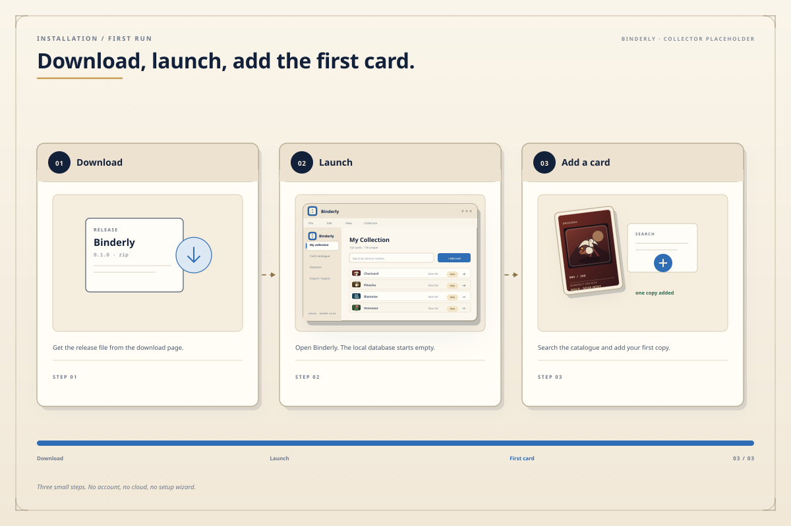
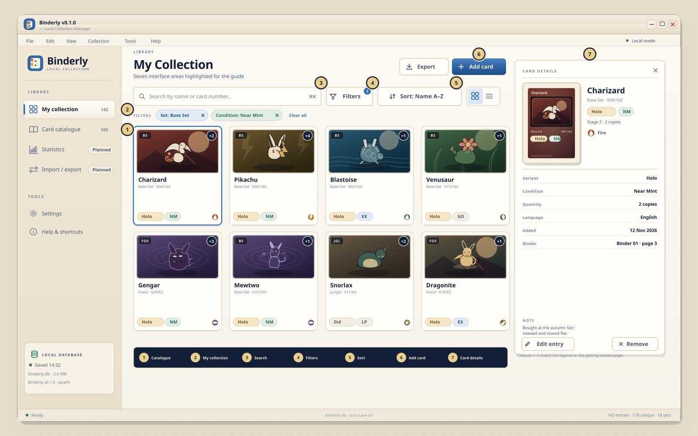
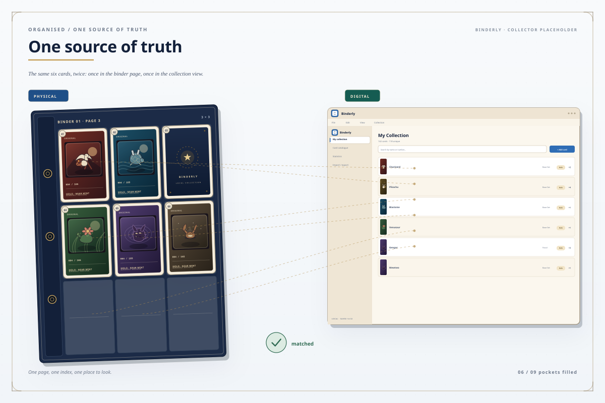
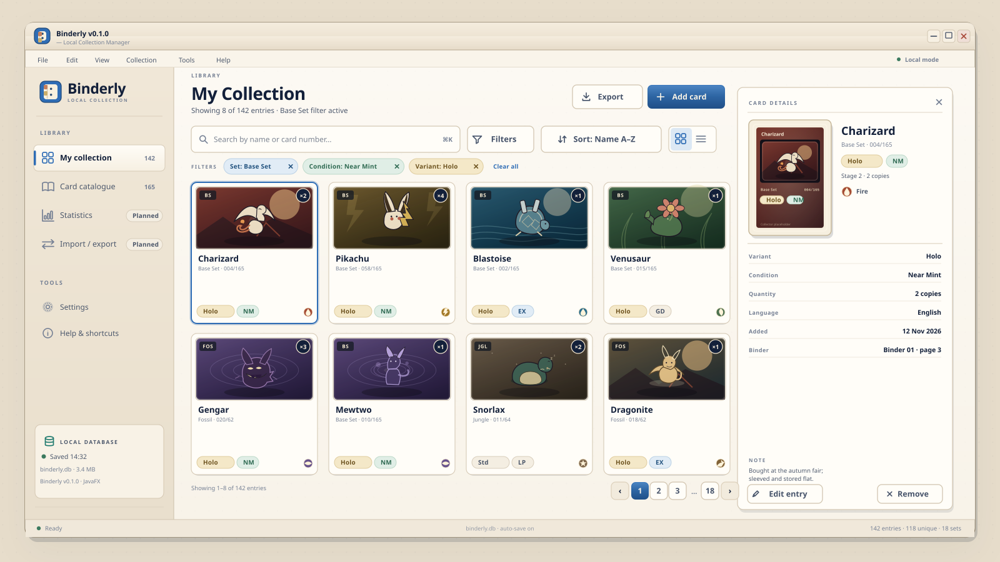

Guide 1 of 5
Your first card, from download to saved.
One card in your hand, an empty collection in front of you. This guide covers the first session: getting Binderly, finding your card, and saving the copy you own.
Seven steps, one first entry
The guide runs in order. Each step has its own heading, a labelled screenshot, and only the detail you need at that moment.
- 7 steps
- First session
- No account needed
Screenshots are labelled placeholders of the intended layout. The first public release has not been published yet, so read the steps as the intended flow.
The walkthrough
Read it straight through the first time, then come back to the step you need.
-
Step 1: Download the application
Start on the Download page. It is the only place on this site where a Binderly release will appear.
The first public release has not been published yet, so there is no file to collect today. When it is ready, that page will carry the release file, its version, and the systems it supports.
- Release status
- Not published yet
- Version in development
- 0.1.0
- Supported systems
- To be confirmed for the first release

Placeholder illustration — the Download page carries the release status, so it is the honest place to check first. -
Step 2: Launch the application
Once you have the release, start Binderly the way you start any other program on your computer. It opens as a single desktop window — no sign-in screen, because there is no account to sign in to.
On a first launch the collection view is empty. That is expected: the collection holds only the copies you add yourself. The catalogue is already there, ready for your first card.
- No account, profile, or password
- Collection starts empty
- Catalogue ready to browse
- Everything runs on your computer
Collection management and local saving are core features in the project plan. Operating-system versions and installer details are not confirmed yet; the Download page will list them before the first release.

Placeholder illustration — download, launch, add a card: the path this page follows. -
Step 3: Learn where everything lives
Before you search for anything, spend a minute with the annotated overview. Binderly keeps two card views, and mixing them up is the most common first-day confusion.
The numbered callouts on the screenshot match this legend, running from the navigation on the left to the details panel on the right.
- 1 Catalogue
- Every card that exists. Browsing here describes the card itself, not a copy you own.
- 2 My collection
- The copies you own, each with a variant, condition, and quantity. This is the view stored on your device.
- 3 Search
- Matches full or partial card names and card numbers in the view you are looking at.
- 4 Filters
- Narrows the visible list by set, type, stage, condition, or variant.
- 5 Sort
- Reorders the same list by name, set, number, HP, condition, or quantity.
- 6 Add card
- Turns a catalogue card into a collection entry. The dialog is covered in step 5.
- 7 Card details
- The selected entry's variant, condition, quantity, and type, plus its edit and remove actions.
These labels follow the planned interface. When the application is complete, the legend will be checked against its real menu and button names.

Placeholder screenshot — callouts 1–7 match the legend opposite. navigation-overview.svg -
Step 4: Find your first card
Imagine the card in your hand is a Base Set Charizard. You may not remember how the catalogue spells it, but you know enough to find it.
- Name: char
- Number: 004/102
- Set: Base Set
Partial names work: char is enough. You can also type the number from the card's corner, such as 004/102, or just its digits.
Catalogue
Every card that exists
Search here to answer one question: can Binderly describe this card? Looking never adds anything to your binder.
My collection
The copies you own
Search here to answer a different question: do I already have this card, and in what condition?
Searching one view never changes the other. If a card is missing from the catalogue, adding it by hand is planned but not in the first release. Planned

Placeholder screenshot — catalogue search with an Add card action on every entry. -
Step 5: Add the copy you own
Select the card in the catalogue and choose Add card. The dialog asks about the physical copy in your hand, not the card in the abstract.
Example entry
- Charizard
- Base Set
- 004/102
- Holo
- Near Mint
- Quantity 1
- Variant
- Which printing you own — here, the holo print rather than the standard one. Different variants stay as separate entries.
- Condition
- Your honest assessment of wear: near mint for a card that went from pack to sleeve, lower for one that spent a decade in a shoebox.
- Quantity
- How many identical copies you are recording. Two copies in the same variant and condition become one entry with a quantity of two.
Variant and condition are not the same thing. Two holo Charizards — one near mint, one visibly played — are two entries, because the copies are not interchangeable. If an identical entry already exists, adding another copy increases its quantity instead of creating a duplicate.
Confirm the dialog and the entry appears in My collection straight away. Mistakes are not permanent: the managing guide covers changing a quantity, correcting a condition, or removing an entry.

Placeholder screenshot — variant, condition, and quantity describe the copy, not the card. -
Step 6: Let the collection save itself
There is no Save button to remember. Collection changes are written locally as you work, so an entry you add is still there when you close the application, shut the laptop down, and open Binderly again next week.
- No sign-in and no sync spinner
- Entries are written as you work
- Reopening shows the same collection
- Data stays on this computer
Local is not a backup
If the application data is deleted, the collection goes with it, and this website cannot restore it. Import and export are the intended backup route, but they are planned and not in the first release. Planned

Placeholder illustration — the same cards, recorded once and kept on your device. -
Step 7: Continue exploring
Your first entry is the hardest one. From here, four guides pick up where this one stops, each in the same step-by-step shape.
The statistics and import/export guides describe intended behaviour. Read them as a preview; the Download page remains the source for what is actually available.

Placeholder screenshot — the collection view where each of the other guides begins.
Questions before your first card
Short answers to the things newcomers ask most often.
Can I download Binderly today?
No. The first public release has not been published yet. The Download page will show the release file and the supported systems as soon as they are confirmed; it is the only place worth checking.
Do I need an account to use it?
No. There is no sign-up, no profile, and no password. Binderly is a single-user desktop application, and the collection stays on your device.
What happens to my collection when I close the application?
Nothing is lost. Collection changes are saved locally, so the entries are waiting when you reopen the application. Local saving is a core part of the app.
I added the wrong card. Can I fix it?
The specified behaviour is to open the entry's card details, where you can change the variant, condition, or quantity, or remove the entry after a confirmation. The managing guide walks through each action.
How do I keep a backup of my binder?
Import and export are the intended way to create a backup file, but they are a planned feature and are not in the first release. Until then, the collection exists only on the computer that holds it.